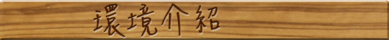
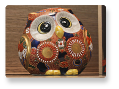
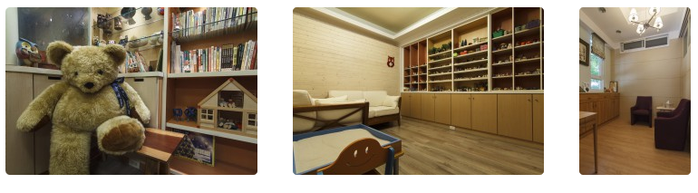
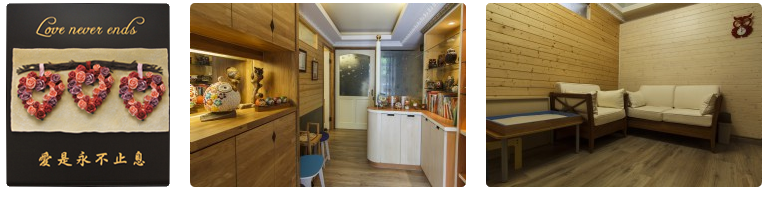
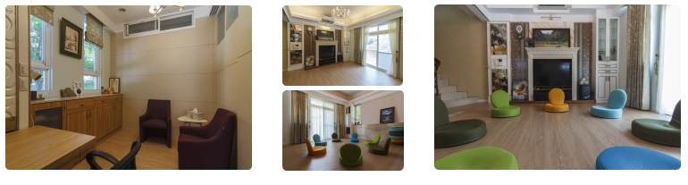

就在府城北區育德路上，有個舒適的空間等著您來探索生命的議題，不管是想更了解自己、了解和身邊家人或朋友的關係，我們都提供美好的空間與氛圍陪伴您走一段心路歷程。
我們除了擁有專業的團隊，同時也有美好、溫馨的外在空間，陪伴您一起探索、敞開內在的心理空間。
在這裡，我們提供溫馨的會談室，讓您和自己或家人、親密伴侶盡情對話，開展不同的生命視野；輕鬆自在的遊戲室，讓小朋友透過玩具、遊戲的過程表達內在的心理世界；物件豐富的沙遊室，讓不同年齡層的朋友可以在歷程中體驗自己內心未曾覺知的自己與力量。此外，在明亮的團體活動室裏，透過彼此的分享及成長，讓我們不斷地充實自己，形塑出自我心中美好的樣子，這也是「看見光亮心理諮商所」在北區落地、開展的重要動力。
來到這個美好空間的時候，請在等候休息區坐一坐、緩一緩，感受我們用心為您準備的寧靜，簡單的茶水和書籍讓您在會談前靜心沉澱；小朋友更有大熊、童書、和小玩具來做伴，讓孩子可以用自己最自在的方式學會等待。
美好的環境與氛圍是探索、開展內在心靈空間的力量，期盼您走出諮商所時，在仰望天空之際，更帶走我們為您盛裝的生命課題與解答。
